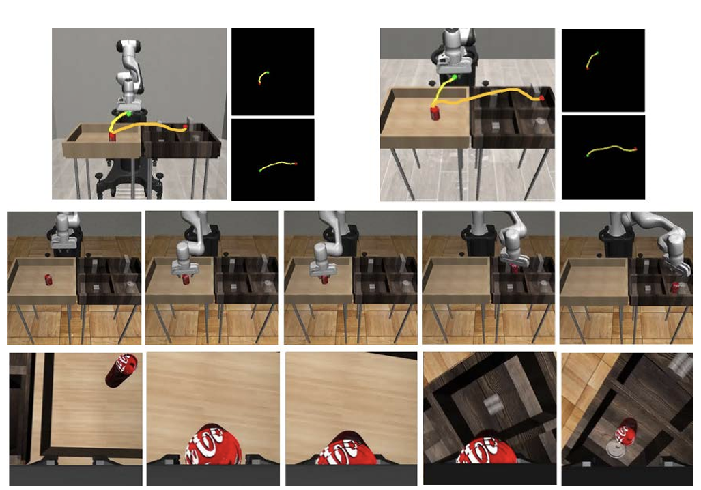
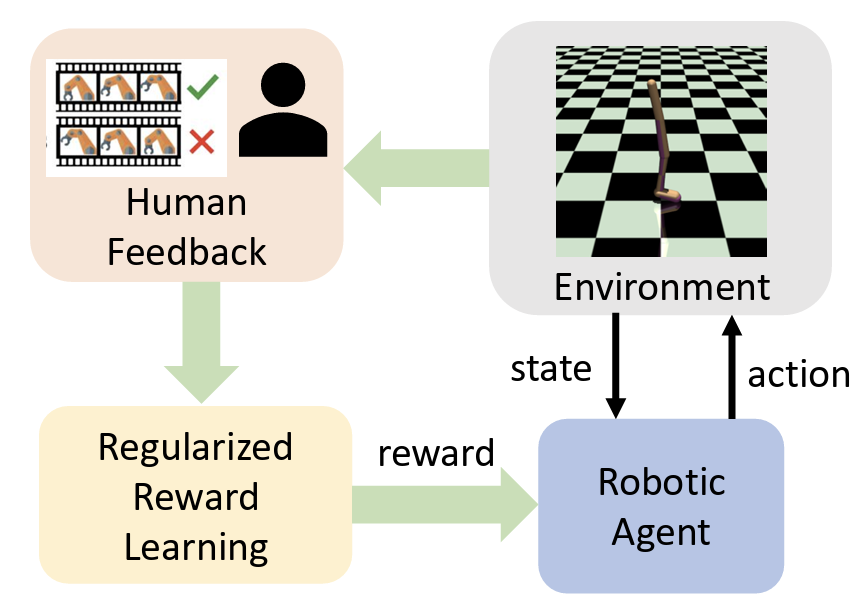
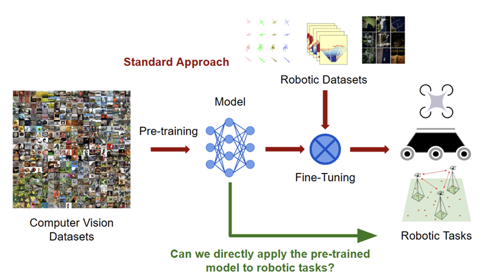

▶ Watch demo
▶ Watch demo
AFFORD2ACT: Affordance-guided automatic keypoints for generalizable manipulation
Compact 38-D state via semantic keypoints → lightweight policy that transfers to unseen objects and clutter.
Building data-efficient, generalizable manipulation and navigation by integrating strong visual models, compact representations, and feedback-driven policy learning.
 ▶ Watch demo
▶ Watch demo
Compact 38-D state via semantic keypoints → lightweight policy that transfers to unseen objects and clutter.

▶ Watch demoSketches seed and guide RL/IL; ~96% of teleop baseline with 1.7× gains over pure RL.

▶ Watch demoStabilizes preference learning and avoids reward hacking; +20–30% over vanilla VLM feedback baselines.

▶ Watch demoFoundation-vision features improve exploration and mapping in unknown environments.
Research focuses on integrating foundation-scale vision with robot learning to build generalizable, data-efficient manipulation and navigation. Methods include affordance-guided representations, preference-based reward learning, and multimodal policy design. Aim: robust long-horizon behavior that actually transfers out of the lab.
Email: singhanukriti98@gmail.com
CV: PDF